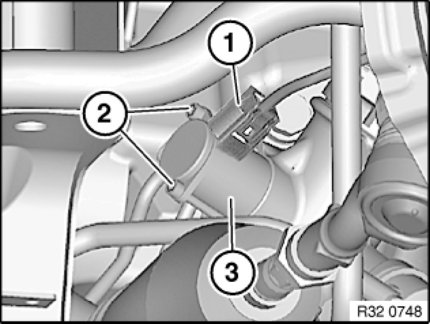

Removing and Installing/Replacing EH Converter for Servotronic
32 13 650 - Removing and installing/replacing EH converter for Servotronic

Important!
Adhere to the utmost cleanliness. Do not allow any dirt to enter the hydraulic system.

Necessary preliminary tasks:
- If necessary, remove steering gear cover at side

Disconnect plug connection (1).
Unfasten screws (2).
Remove EH converter (3).
Installation Note:
Clean side return orifice with compressed air.
Align EH converter (3) to opening in power steering gear, press by hand into power steering gear up to stop, insert screws (2) and tighten down.
Tightening torque 32 13 12AZ [1][2]Specifications.
After installation:
- Fill and bleed hydraulic system Service and Repair